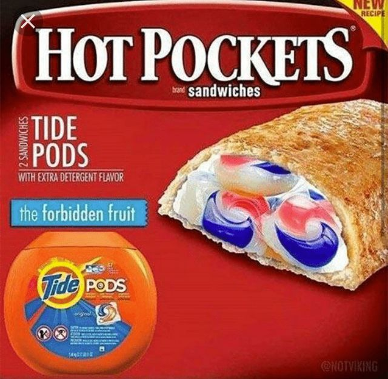
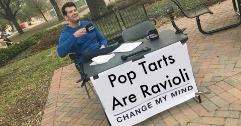

#5 This is the FBI is watching you meme. this meme spawned from peoples paranoia and caused even more.
#4 This is the tide pod challenge meme. This meme was started about how beautiful these laundry pods looked, so people started eating them and this meme was born.
This is the exit ramp meme. This meme implies that you would strongly take the exit ramp then the road.
On February 16, conservative "comedian" Steven Crowder set up a table on Texas Christian University's campus with a sign that read, "Male privilege is a myth. Change my mind." He then tweeted a pic of himself at said table, holding a coffee mug, grinning hesitantly. People saw this and started putting there own spin on it.